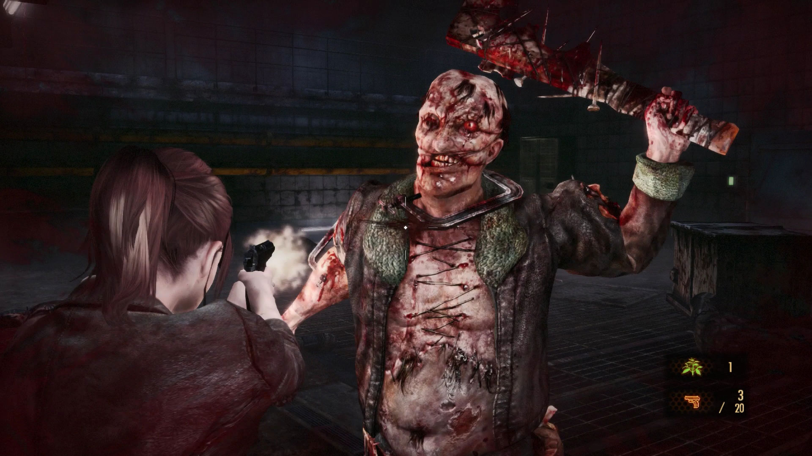
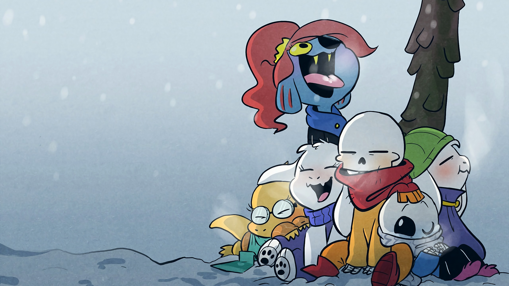

Elden Ring é um jogo de RPG de ação em mundo aberto desenvolvido pela FromSoftware e supervisionado por Hidetaka Miyazaki, o criador de Dark Souls. Ambientado em um mundo vasto e interconectado, os jogadores enfrentam desafios brutais e exploram uma narrativa envolvente enquanto forjam alianças e lutam contra inimigos mortais.
 Resident Evil Revelations 2 é um jogo de terror de sobrevivência em terceira pessoa lançado em 2015. A história segue Claire Redfield e Moira Burton, que são sequestradas e levadas para uma ilha isolada onde são forçadas a lutar contra criaturas mutantes. O jogo apresenta um sistema de alternância de personagens, permitindo que os jogadores mudem entre Claire e Moira durante a jogabilidade. Além disso, o jogo também possui um modo cooperativo online, onde dois jogadores podem jogar juntos como Claire e Moira. Resident Evil Revelations 2 recebeu críticas positivas por seu enredo envolvente, jogabilidade intensa e atmosfera de terror.
Resident Evil Revelations 2 é um jogo de terror de sobrevivência em terceira pessoa lançado em 2015. A história segue Claire Redfield e Moira Burton, que são sequestradas e levadas para uma ilha isolada onde são forçadas a lutar contra criaturas mutantes. O jogo apresenta um sistema de alternância de personagens, permitindo que os jogadores mudem entre Claire e Moira durante a jogabilidade. Além disso, o jogo também possui um modo cooperativo online, onde dois jogadores podem jogar juntos como Claire e Moira. Resident Evil Revelations 2 recebeu críticas positivas por seu enredo envolvente, jogabilidade intensa e atmosfera de terror.  xxxxxxxxxxxxxxxxxxxxxxxxxxxxxxxxxxxxxxxxxxxxxxxxxxxxxxxxxxxxxxxxxxxxxxxxxxxxxxxxxxxxxxxxxxxxxxxxx